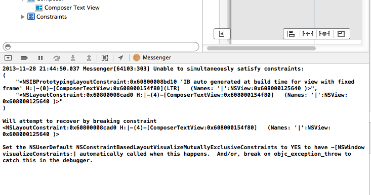
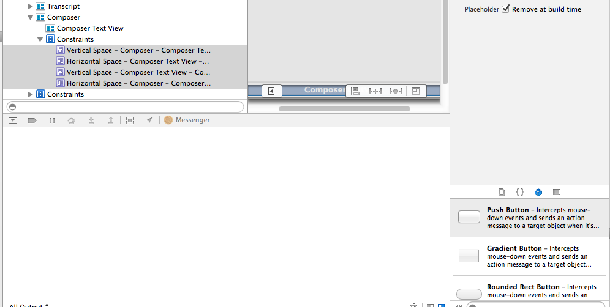

Preventing 'IB auto generated at build time for view with fixed frame' when using Auto Layout
If you’re using Interface Builder with auto layout and go to write some layout constraints in code you may run into the following error - where the constraints you’ve added in code conflict with layout constraints ‘IB auto generated at build time for view with fixed frame’.

To prevent this, and to be able to do your layout constraints in code while not conflicting with interface builder, add leading/trailing/top/bottom constraints, just the existstence of them being there will tell ib not to interfere. And set them all to be removed at build time.

Why this works is because: if you have no layout constraints then interface builder will automatically generate its own, so you have to add your own in interface builder to stop ib from doing this, but you don’t want those ones you added since you’re doing yours in code, so you set them to be removed a build time, then they’re removed before the layout constraints you wrote in code are added. And things are now a-o-k.